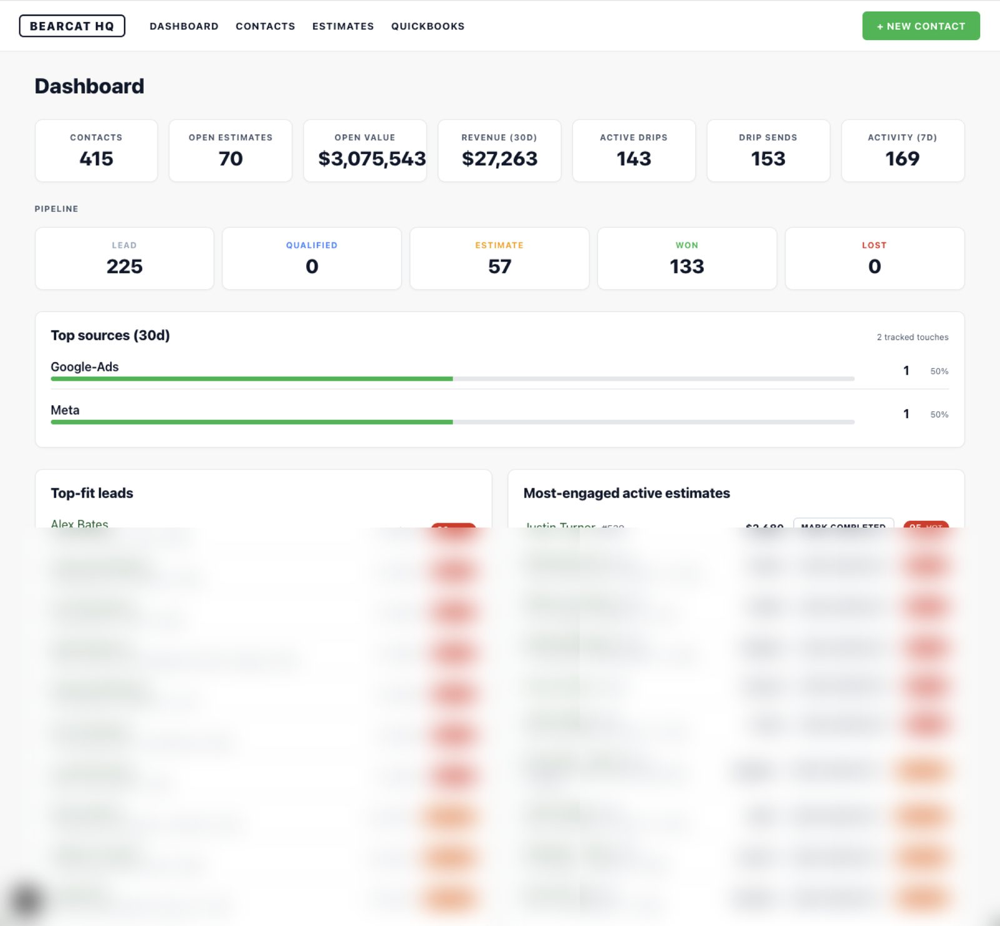

Bearcat HQ
A custom CRM and communication hub that replaced spreadsheets + Gmail + QuickBooks — surfacing $3.1M of open pipeline on a single dashboard, built in 3 weeks of focused work.

A patchwork of tools that didn't talk to each other.
Bearcat Turf is a fast-growing artificial turf installer in the DFW metroplex, serving residential and commercial clients across Parker, Tarrant, Collin, and Wise counties. Its operations were a patchwork of disconnected tools:
- Leads came in through four different channels — website form, Meta Lead Ads, Google Ads, word-of-mouth. None of them talked to each other.
- Estimates and invoices lived in QuickBooks with no view of which leads to chase or which estimates were going cold.
- Follow-ups happened in the owner's head — or didn't happen at all. Promising leads sat in a shared inbox for weeks.
- Email history was trapped in Gmail — remembering what was said last August meant context-switching, searching, piecing things together.
- No single number answered "how is the business doing right now?" — revenue, pipeline, and active projects each lived in their own tool.
Off-the-shelf CRMs could theoretically solve it — at a six-figure implementation, a dozen clicks per action, and a subscription that scales with success. Bearcat needed a CRM that worked the way it works — not the other way around.
Deliberately modern, deliberately boring architecture.
Bearcat HQ ingests leads from every channel, attributes them to the campaign that generated them, scores them automatically, nurtures them through drip campaigns, and surfaces the state of the entire business on a single dashboard.
- Next.js 15 (App Router, React Server Components) — server-rendered, single codebase for UI + APIs.
- Prisma + SQLite (dev) / Postgres (prod) — strongly-typed data layer, 11 domain models.
- Webhook-first integration — Meta, Google Ads, QuickBooks, and the website all post into a single signed pipeline with HMAC verification and automatic dedup.
- Brand-aligned UI — custom design system in Bearcat's forest + bright-green palette. Looks like the business, not like SaaS.
Architecture chosen so the business can scale without a rebuild.
Four automations that replaced an entire toolchain.
Every lead, every channel, one place.
Meta Lead Ads flow in via a signed webhook. Google Ads leads carry gclid, web-form leads carry fbclid + UTMs via a drop-in script. Every contact shows exactly which ad, campaign, and landing page produced them.
Zero data entry for incoming leads.Lead and deal scoring, automatic.
Every contact scored 0–100 for fit across 8+ signals; every active estimate scored for engagement. Hot leads bubble to the top. Two dashboard widgets tell the owner where to spend the next hour.
Stop triaging by gut feel.Full history, no Gmail hunting.
Follow-up composer sends via Gmail or SMS in one click. Every message logged to a Slack-style thread, deep-linked into real Gmail. Drip campaigns auto-enroll new estimates for a 4-step nurture.
No more "I forgot to follow up."Complete a job in one click.
"Mark Completed" closes the estimate, moves the contact to Won, ends active drips, drops the project off the active list. The dashboard always reflects reality.
Pipeline stays truthful without manual hygiene.Built for scale without a rebuild.
- Unified event log. One polymorphic Activity table with typed channel + JSON metadata. New integrations plug in without schema changes.
- Attribution-aware data model. Dedicated LeadSource table captures gclid / fbclid / msclkid / utm_* / campaignId / adId / formId. Feeds channel-ROI reporting today; enables offline-conversion import back to Google/Meta tomorrow.
- HMAC-verified webhooks. Every inbound payload verified with SHA-256 HMAC. Rejects forged or replayed requests.
- Idempotent ingestion. Every sync path deduplicates on provider IDs. Re-running is always safe.
- Production-ready. Deployable to Vercel + Neon Postgres with zero architectural changes — one connection string flip.
Not a CRM. An operating system for the business.
154 active estimates with live engagement scores. 262 invoices with 30-day revenue tracking. Every Meta Lead Ads submission flows direct to the CRM — no Zapier, no monthly fee. 1,000+ emails across 24 key customer threads, rendered inline and linked to Gmail. The business didn't get a CRM — it got its own operating system.
Screenshots.
The project in the wild — UI from the live product.

Your business running on 6 different tools?
If your data lives in five places and your follow-ups live in your head, there's a better way. Tell us what your week looks like and we'll map out what a custom OS looks like for you.
Start a Conversation